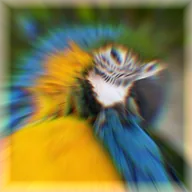

Chromatic Zoom Blur

A zoom blur from a center point that pulls red inwards and blue outwards, so edges spread into rainbow fringes.
Settings
| Setting | Type | Range | Default |
|---|---|---|---|
| Center | Point (X, Y) | – | 0.5, 0.5 |
| Strength | Number | 0 to 1.9 | 0.15 |

A zoom blur from a center point that pulls red inwards and blue outwards, so edges spread into rainbow fringes.
| Setting | Type | Range | Default |
|---|---|---|---|
| Center | Point (X, Y) | – | 0.5, 0.5 |
| Strength | Number | 0 to 1.9 | 0.15 |